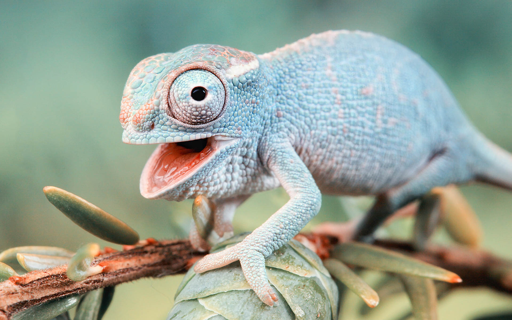

Chameleon

Click on the picture for a step-by-step guide
Interesting facts about chameleons:
- The word 'chameleon' is derived from two ancient greek words and directly translates to 'ground lion'.
- The smallest species, called the Brookesia Micra, is about the size of a matchstick head.
- Half the chameleon species are endangered, due to global warming and greater human activity around the world.
- Chameleons don't actually change color to match their surroundings. Instead, they are affected by light, temperature, and mood changes.
- Chameleons have very long tongues. While the length varies from species to species, they are generally around 1.5 to 2 times longer
than a chameleon’s body from tip of nose to tip of tail.